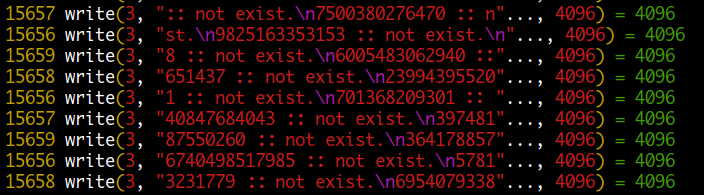
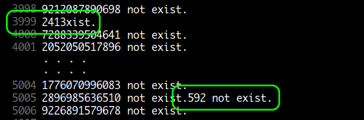
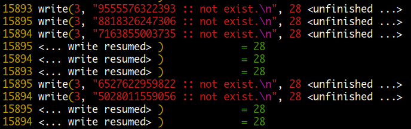

예 제 )
예제에서는 특정 상황에 대해서 여러 가지로 처리할 수 있는 방법에 대해 알아보겠습니다. tail 명령을 이용하는 방법, fork() 을 이용해 멀티코어 cpu 를 활용하는 방법에 대해서도 알아보겠습니다.
아래와 같은 형식의 데이터가 계속 추가되어 하루에 200,000 라인 정도가 발생합니다. keyfile 은 약 10,000 개의 키값을 가지고 있습니다. 일정 시간 간격으로 datafile 에 있는 key 값을 keyfile 에 있는 값과 비교하여 존재하지 않을 경우 not_exist.txt 파일에 저장하는 것입니다. keyfile 의 경우 내용이 고정되어 있는 경우와 매번 바뀌는 경우를 알아보겠습니다.
$ cat datafile.txt $ cat keyfile.txt
1358726575123 # key 1358726575123
Joseph Muller # name 9973834728345
carpenter # job 7836472098652
5573834728345 .....
Andres Smith .....
student
7836472098652
Mariah Anthony
dentist
.....
.....
첫 번째
keyfile 값이 고정되어 있을 경우는 datafile 에 추가되는 내용만 처리하면 되므로
다음과 같이 tail -f 명령과 함께 처리하는 것이 효율적입니다.
$ cat program.awk
#!/usr/bin/awk -f
BEGIN {
keyfile = "keyfile.txt"
datafile = "datafile.txt"
not_exist = "not_exist.txt"
# 먼저 keyfile 을 읽어들입니다.
while (( getline < keyfile) > 0)
if ( $1 != "" ) keys[$1]
close(keyfile)
RS="[0-9]{12,}"
}
{
if ( RT != "" && ! ( RT in keys )) {
print RT " not exist." >> not_exist
# awk 가 종료되지 않고 지속적으로 실행 중에 있는 상태이므로
# 실제 파일에 쓰기가 되려면 fflush() 해야 됩니다.
fflush(not_exist)
}
}
실행은 다음과 같이 합니다.
$ tail -f datafile.txt | ./program.awk
$ ls
datafile.txt keyfile.txt not_exist.txt
$ cat not_exist.txt
9330232478366 not exist.
3709306406653 not exist.
2607832268163 not exist.
.....
두 번째
두 번째는 keyfile 값이 고정되지 않고 변경되는 경우입니다. 따라서 keyfile 도 매번 다시 읽어들여야 합니다. 변경된 keyfile 값이 전체 datafile 에 다시 적용되야 하므로 첫 번째 경우와 같이 tail 명령을 사용하여 새로 입력되는 데이터만 처리할 수 없습니다.
interval 을 60 초로 하여 매분마다 실행하고 매 실행 시마다 새로 keyfile 과 datafile 을 읽어들여야 하므로 작업 완료 후에는 close() 합니다. not_exist 파일도 쓰기가 완료되기 위해 close() 합니다.
$ cat program.awk
#!/usr/bin/awk -f
@load "time"
BEGIN {
keyfile = "keyfile.txt"
datafile = "datafile.txt"
not_exist = "not_exist.txt"
interval = 60
while (1) {
RS="\n"
while (( getline < keyfile) > 0)
if ( $1 != "" ) keys[$1]
close(keyfile) # 필수
RS="[0-9]{12,}"
while (( getline var < datafile) > 0)
if ( RT != "" && ! ( RT in keys ))
print RT " not exist." >> not_exist
close(datafile); close(not_exist) # 필수
sleep(interval)
}
}
하루에 200,000 라인이 생성되므로 x 30 을 해서 6,000,000 라인을 만들어서 while(1) 문을 주석 처리한 후 1 회 실행에 걸린 시간을 측정한 것입니다.
$ time ./program.awk
real 0m4.663s
user 0m4.560s
sys 0m0.100s
세 번째
이번에는 fork 을 이용해 cpu core 수만큼 child 프로세스를 생성하여 실행합니다. 먼저 datafile 을 split 한 후에 각각의 파일을 child 프로세스로 처리합니다. 이때는 여러 개의 child 프로세스가 하나의 not_exist 파일에 동시에 쓰기를 하는 상태입니다. awk 는 기본적으로 4096 bytes 블록 단위로 버퍼링을 하여 쓰기를 하는데 이렇게 되면 끝부분에 위치한 라인이 잘릴 수가 있습니다. 왜냐하면 다음에 다른 프로세스의 블록이 쓰여질수 있기 때문입니다. 따라서 정상적으로 데이터가 쓰여지기 위해서는 fflush() 를 이용해 라인 단위로 쓰기를 해야 합니다.
$ cat program.awk
#!/usr/bin/awk -f
@load "time"
@load "fork"
BEGIN {
keyfile = "keyfile.txt"
datafile = "datafile.txt"
not_exist = "not_exist.txt"
interval = 60
core = 4 # 4 개의 cpu core
while (1) {
RS="\n"
while (( getline < keyfile) > 0)
if ( $1 != "" ) keys[$1]
close(keyfile)
RS="[0-9]{12,}"
system("split -d --additional-suffix=.split -n l/" core " " datafile)
for ( i=0; i < core; i++ ) { # core 수 만큼 child process 를 생성
if (( pid = fork()) == 0) { # child process
datafile = sprintf("x%02d.split",i)
while (( getline var < datafile) > 0)
if ( RT != "" && ! ( RT in keys )) {
print RT " not exist." >> not_exist
fflush(not_exist) # 필수
}
exit # child process exit
}
}
# parent 는 child process 가 모두 종료될 때까지 기다림
for ( i=0; i < core; i++ ) wait()
system( "rm -f *.split" )
sleep(interval)
}
}
두 번째 single process 에 비해 시간이 줄기는 했지만 print 명령으로 write 한 후에 매번 fflush() 를 호출하여 sys time 이 많이 증가된 것을 볼 수 있습니다. ( fflush() 함수는 내부적으로 write() system call 을 사용합니다.) 다음 측정값은 fflush() 를 제거해본 것인데요. 확실히 write 할 때 버퍼를 사용하는 것이 얼마나 효율적이고 시간이 적게 걸리는지 알 수 있습니다.
$ time ./program.awk # fflush() 사용
real 0m3.427s
user 0m6.624s
sys 0m4.324s
$ time ./program.awk # fflush() 미사용
real 0m1.977s
user 0m4.972s
sys 0m0.172s
여러 개의 코어에서 동시에 하나의 파일에 쓰기를 하면 문제가 되지 않을까 생각할 수 있는데요. 이것은 각 코어별로 직접 디스크에 쓰는 것이 아니라 A 라는 파일에 대해서 시스템 전체에서 공유되는 버퍼가 있다고 생각하면 됩니다. 이것을 화장실에 비유하면 core1 에서 쓰기를 하기위해 화장실에 들어갈 때 팻말을 "사용중" 으로 돌려놓고 들어가면 core2 에서 팻말을 보고 대기하게 됩니다.
fflush() 를 사용하지 않은 경우
버퍼를 사용하게 되어 효율적이고 속도가 빠르지만 동시에 여러 프로세스가 같은 파일에 쓰기를 할 경우 블록 끝부분에 있는 라인이 잘릴 수가 있습니다.

동시에 여러 프로세스가 같은 파일에 쓰기를 하여 라인이 잘린 경우

fflush() 를 사용한 경우
버퍼를 사용하지 않아 비효율적이고 속도가 느리지만 라인 단위로 쓰여지므로 정상적으로 쓰기가 됩니다.

네 번째
이번에는 여러 프로세스가 동시에 하나의 파일에 쓰기를 하여 fflush() 사용으로 인한 속도 저하를 방지하기 위해 각각의 child 프로세스가 각각의 tmpfile 에 쓰기를 하고 작업이 완료되면 parent 프로세스가 하나로 합칩니다.
$ cat program.awk
#!/usr/bin/awk -f
@load "time"
@load "fork"
BEGIN {
keyfile = "keyfile.txt"
datafile = "datafile.txt"
not_exist = "not_exist.txt"
interval = 60
core = 4
"mktemp -p ." | getline tmpfile
while (1) {
RS="\n"
while (( getline < keyfile) > 0)
if ( $1 != "" ) keys[$1]
close(keyfile)
RS="[0-9]{12,}"
system("split -d --additional-suffix=.split -n l/" core " " datafile)
for ( i=0; i < core; i++ ) {
if (( pid = fork()) == 0) { # child process
datafile = sprintf("x%02d.split",i)
while (( getline var < datafile) > 0)
if ( RT != "" && ! ( RT in keys ))
print RT " not exist." >> tmpfile i
exit
}
}
cmd = "cat "
for ( i=0; i < core; i++ ) {
wait()
cmd = cmd " " tmpfile i
}
cmd = cmd " >> " not_exist
cmd = cmd "; rm -f " tmpfile "*"
cmd = cmd "; rm -f *.split"
system( cmd )
sleep(interval)
}
}
확실히 fflush() 를 사용하지 않으니 시간이 많이 단축되었습니다.
$ time ./program.awk
real 0m2.007s
user 0m5.012s
sys 0m0.264s